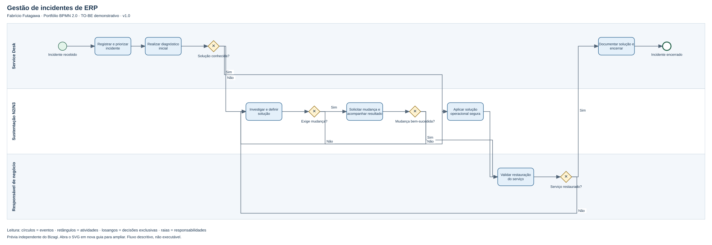

Operação de serviços
Gestão de incidentes de ERP
Triagem, escalonamento e validação com o negócio para restaurar o serviço com rastreabilidade.
Triagem · SLA · Escalonamento
Contexto e problema
Um chamado de ERP pode afetar desde uma rotina individual até uma operação do varejo. O Service Desk precisa entender o impacto, reunir evidências e acionar a sustentação quando a triagem inicial não resolve a falha.
Quando o ticket chega com poucos dados, a prioridade depende de avaliação informal e o chamado pode ser encerrado antes que o negócio confirme a restauração.
Objetivo. Restaurar o serviço e registrar as decisões, a solução aplicada e o aceite do negócio.
Desenho do processo
Compare o cenário de partida com o fluxo proposto.
AS-IS hipotético
Cenário didático descrito em texto, sem levantamento de campo.
- Triagem incompleta
O Service Desk recebe o relato com evidências insuficientes e precisa voltar ao solicitante.
- Prioridade informal
A investigação começa sem critérios consistentes de impacto e urgência.
- Aceite indefinido
O atendimento pode ser encerrado após o ajuste técnico, antes da confirmação do negócio.
TO-BE · Fluxo proposto

Controles e evidências
- Classificar na abertura
Registrar evidências e combinar impacto e urgência para aplicar o SLA acordado.
Evidência. Ticket com prioridade, evidência e responsável. - Escalonar quando necessário
A sustentação investiga e encaminha à GMUD quando a solução exigir autorização.
Evidência. Vínculo entre incidente e mudança. - Confirmar a restauração
O negócio valida o serviço. Se a validação falhar, a sustentação retoma a investigação.
Evidência. Registro de aceite e solução aplicada.
Resultados esperados
Hipóteses para testar em um piloto, com linha de base e metas acordadas com o negócio.
- Menos idas e vindas na triagem.
- Mais previsibilidade no atendimento por prioridade.
- Menos encerramentos prematuros e reaberturas.
| Indicador | Como calcular | Apuração |
|---|---|---|
| Cumprimento do SLA | Incidentes resolvidos no prazo ÷ incidentes resolvidos com SLA aplicável × 100. | Mensal, por prioridade. Considerar as pausas previstas no SLA. |
| Tempo médio de restauração | Soma do tempo entre abertura e restauração ÷ incidentes restaurados. | Semanal, em horas corridas. Acompanhar também a mediana. |
| Reabertura em 7 dias | Incidentes reabertos em até 7 dias ÷ incidentes encerrados com 7 dias completos de observação × 100. | Mensal, considerando somente janelas completas. |
Fontes sugeridas. Histórico de tickets, registros de mudanças e evidências de aceite.
Cenários de validação
Abra um cenário para acompanhar o caminho esperado no processo.
Solução conhecida e segura
O Service Desk registra, prioriza e faz a triagem. A sustentação aplica a solução, o negócio confirma a restauração e o Service Desk documenta e encerra.
Solução exige mudança
A sustentação abre a GMUD e acompanha o resultado. Com a mudança bem-sucedida, o incidente segue direto para validação do negócio.
Mudança rejeitada ou malsucedida
O incidente permanece aberto e volta para investigação técnica.
Negócio ainda identifica a falha
A validação negativa devolve o atendimento à sustentação para nova investigação.
Estudo demonstrativo elaborado com apoio de IA. Modelo BPMN 2.0 para revisão no Bizagi Modeler. Importação no aplicativo e medição em operação ainda pendentes.